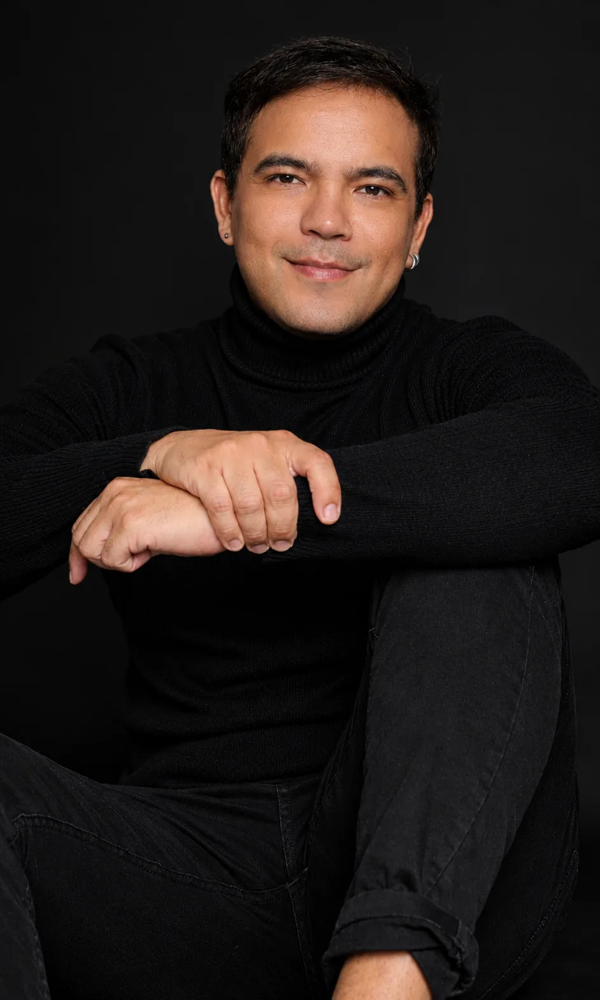
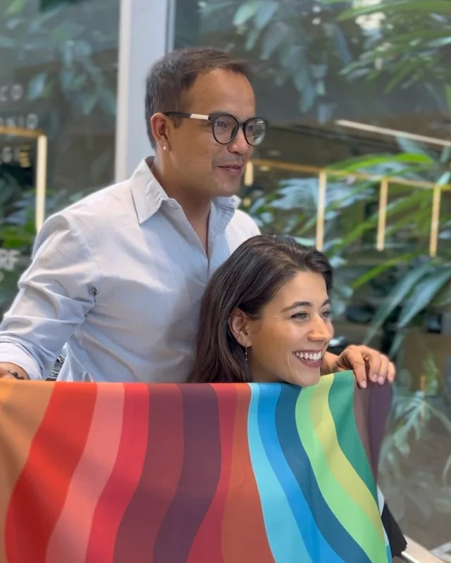
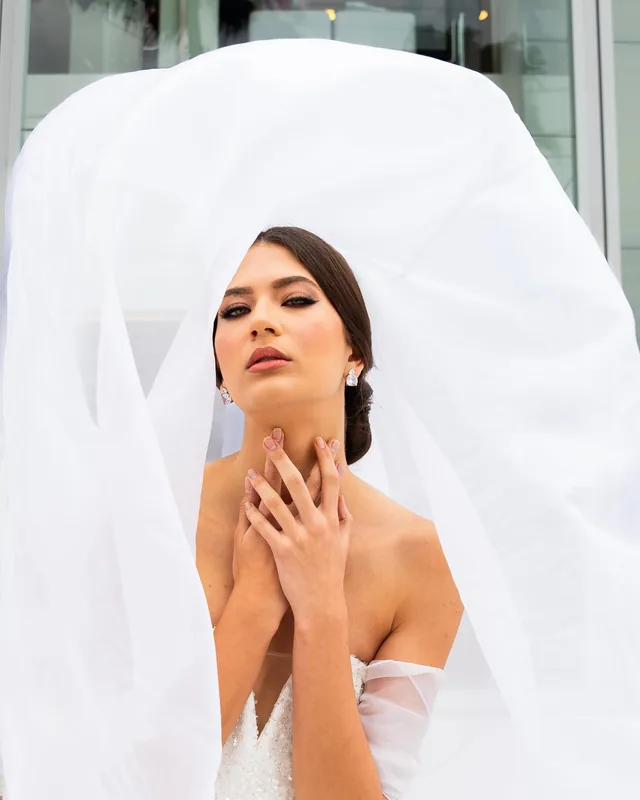
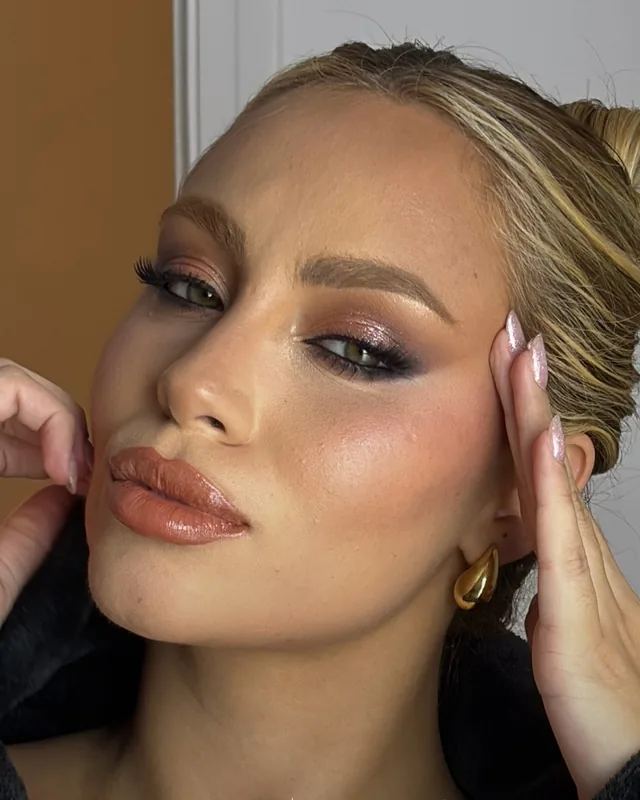
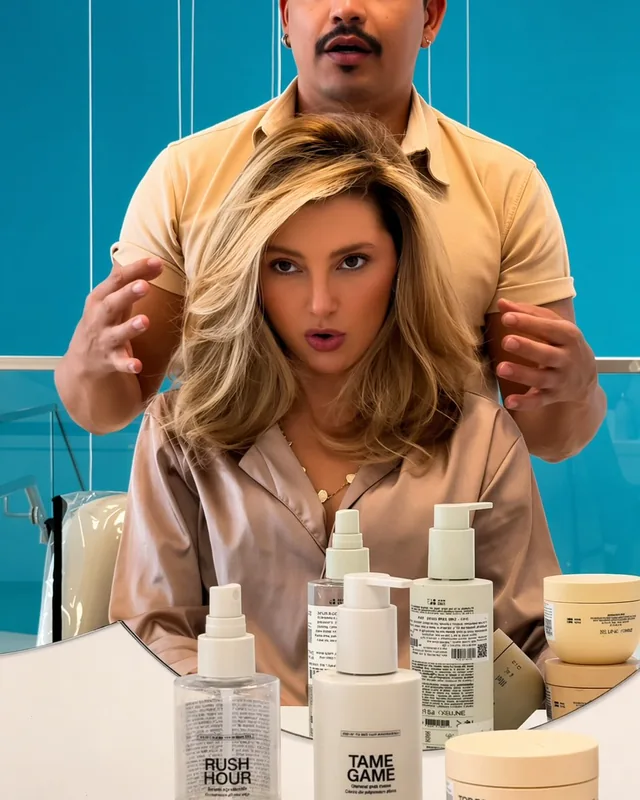
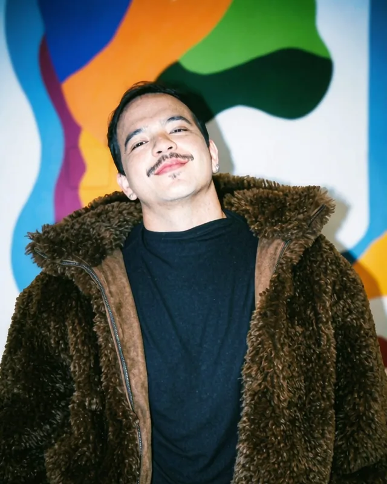
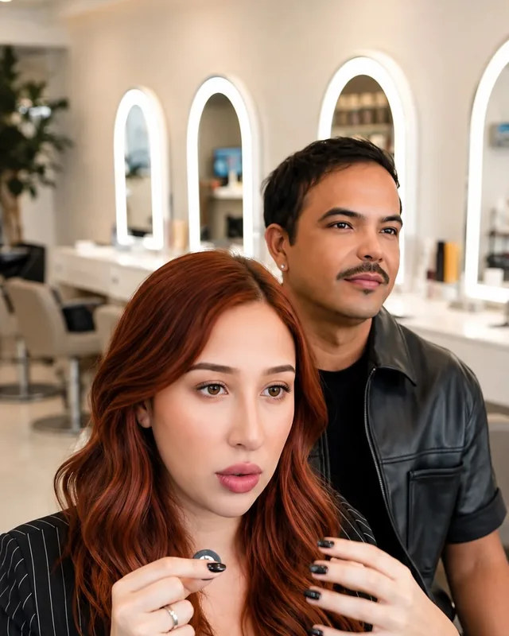
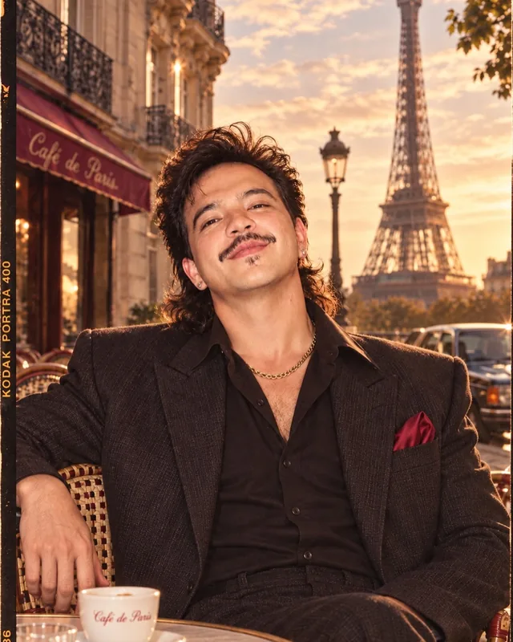
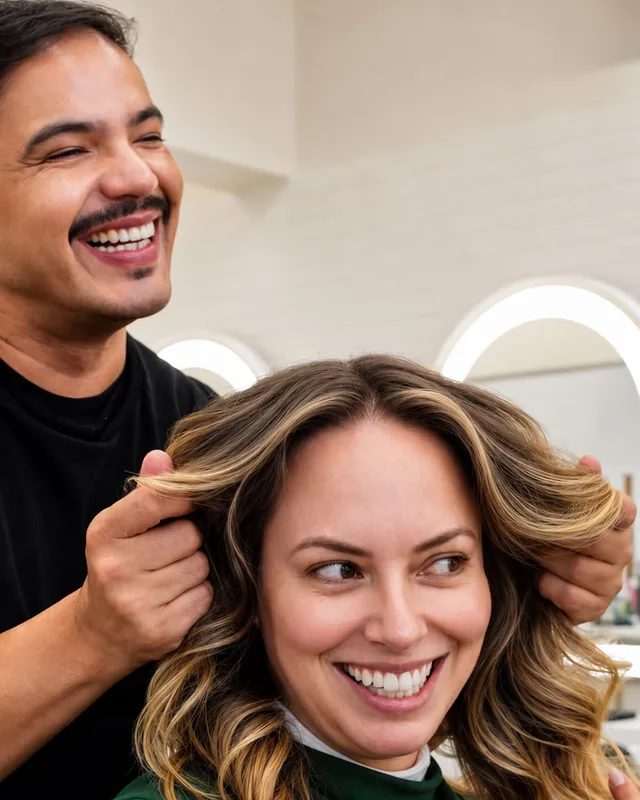
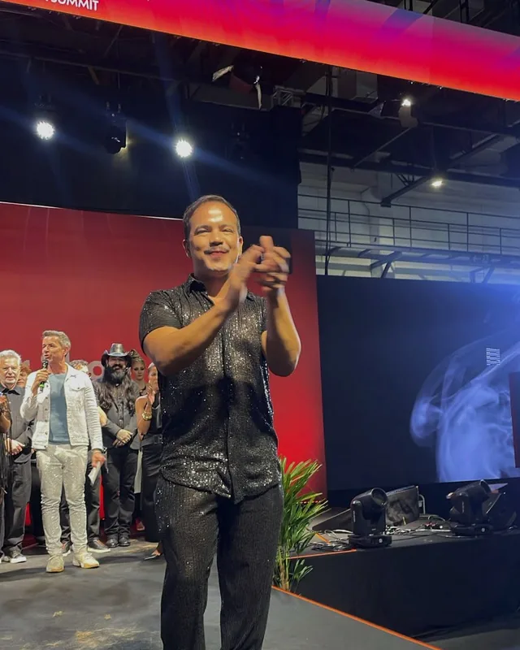

Corte visagista
Leitura do rosto, do fio e da rotina antes da tesoura. O corte é pensado para cair bem no dia seguinte, não só na saída do salão.
AgendarHair design, visagismo e coloração pessoal · Morumbi, SP
Corte, cor e maquiagem planejados a partir dos seus traços, da sua rotina e de como você quer ser vista.

Visagismo
Não faço você parecer com outra pessoa. Meu trabalho é valorizar o que já é seu.Roni Romano
Antes da tesoura e da cor, vem a leitura: formato do rosto, traços, tom de pele, textura do fio, rotina e estilo. É a partir disso que cada corte, cada ponto de luz e cada maquiagem é pensado, para o resultado parecer seu e continuar bonito nos dias seguintes.
Serviços
Atendimento individual e com horário marcado. Cada serviço começa por uma conversa sobre o que você quer e o que o seu cabelo pede.
Leitura do rosto, do fio e da rotina antes da tesoura. O corte é pensado para cair bem no dia seguinte, não só na saída do salão.
Agendar
Morena iluminada, loiros, ruivos e glow com raiz suave. Pontos de luz no lugar certo para valorizar o rosto e crescer com naturalidade.
Agendar
Análise das suas características para descobrir, entre as 12 cartelas, os tons que valorizam você no cabelo, na maquiagem e nas roupas.
Agendar
Cabelo planejado com antecedência: cor, tratamento e testes para chegar ao dia com o fio saudável. Maquiagem pensada para o vestido e para o evento.
Agendar
Pele bem feita e traços valorizados, sem exagero. Para eventos, ensaios e datas especiais, sempre com a sua identidade.
Agendar
Diagnóstico do fio e protocolos de tratamento como Especialista Redken, para recuperar brilho e força e manter a cor por mais tempo.
AgendarAtendimento
Você conta o que quer, o que não gosta e como é a sua rotina com o cabelo.
Análise do rosto, dos traços, do tom de pele e da saúde do fio para definir o caminho.
Execução com técnica e produtos escolhidos para o seu tipo de cabelo.
Orientação de produtos e de manutenção para o resultado durar até a próxima visita.
Portfólio

Sobre
Sou hair designer, visagista e expert em coloração pessoal em São Paulo. A paixão por cuidar de cabelos virou carreira, e a carreira virou um jeito de trabalhar: unir corte, cor e imagem para que cada pessoa saia parecendo mais ela mesma.
Estudar faz parte da rotina. Cada formação, viagem e técnica nova volta para a cadeira do salão em forma de diagnóstico mais preciso e de um resultado mais seguro para quem senta comigo.




Agendamento
Preencha e a mensagem chega pronta no meu WhatsApp. Se preferir, chame direto pelo número ou pelo direct do Instagram.
Onde atendo